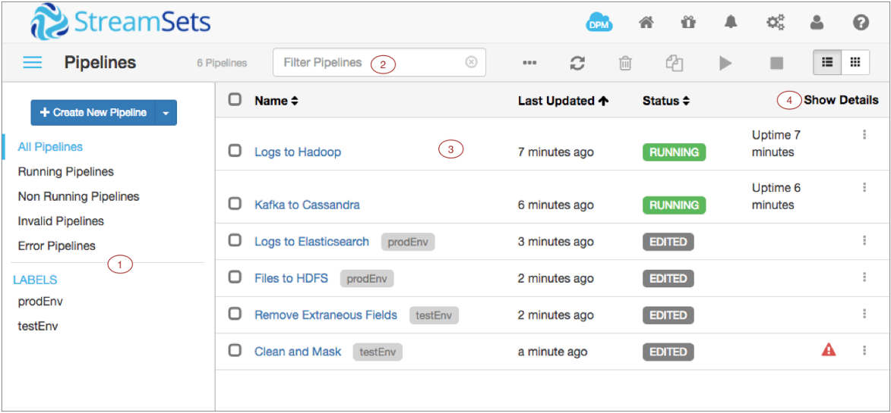

You can display all pipelines in the Data Collector console when you click the Home icon or the Pipelines link in the pipeline path when configuring or monitoring a pipeline. View all pipelines on the Home page to perform pipeline maintenance.
The following image shows the Data Collectorconsole when you display all pipelines on the Home page:
| Area/Icon | Name | Description |
|---|---|---|
| 1 | Pipeline library | Library of pipelines associated with this Data
Collector. The library lists:
|
| 2 | Search field | Allows you to search for pipelines by name. |
| 3 | Pipeline list | Allows you to select one or more pipelines and then perform an action on the pipelines, such as starting, stopping, or exporting the pipelines. |
| 4 | Show Details | Displays details about error messages and alert texts for each pipeline in the list. |
| Toggle Library Pane icon | Icon to show or hide the pipeline library. | |
| Refresh icon | Refreshes the pipeline list. | |
| Export icon | Exports the selected pipelines. | |
| Delete icon | Deletes the selected pipelines. | |
| Duplicate icon | Duplicates the selected pipelines. | |
| Start icon | Starts the selected pipelines. | |
| Stop icon | Stops the selected pipelines. | |
| List View icon | Displays the pipelines in a list. | |
| Grid View icon | Displays the pipelines in a grid. | |
| Error icon | Indicates that the pipeline has errors. | |
| Actions icon | Allows you to import, export, duplicate, or delete a single pipeline. |